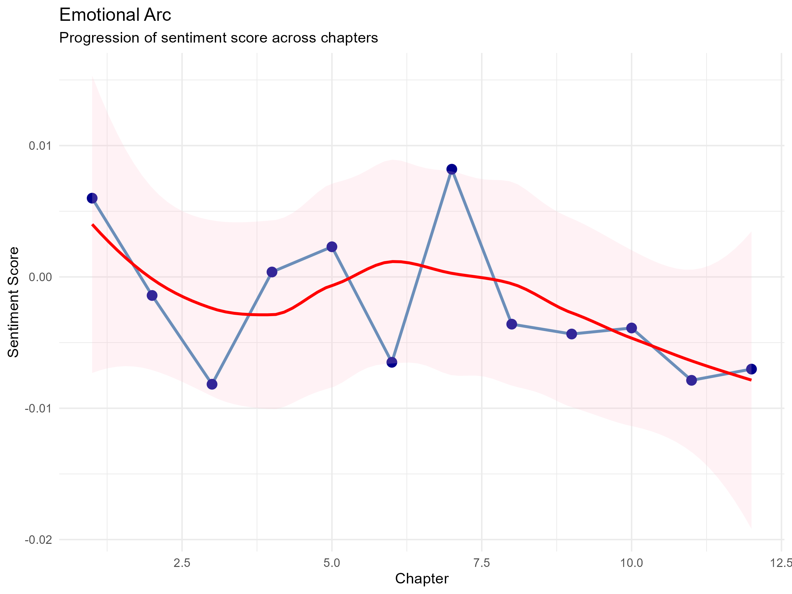
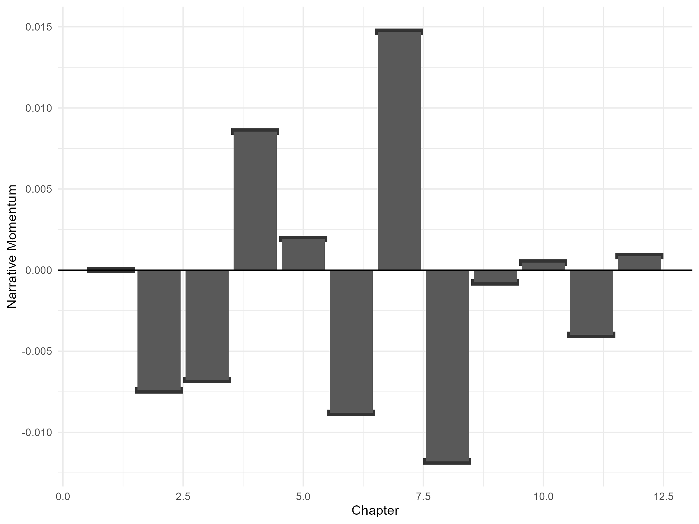

bookmetrics is a specialized R toolkit for performing quantitative narrative analytics on public-domain literature. By treating literary texts as “matches” or “events,” it allows researchers to track momentum, identify turning points, and visualize character presence using high-fidelity time-series data.
Project Overview
The package automs the extraction of structural narrative metrics from raw text (primarily via Project Gutenberg). It transforms unstructured prose into a structured book_analysis object containing: - Sentiment Timelines: Chapter-wise emotional polarity. - Narrative Momentum: The “velocity” of sentiment shifts. - Key Events: Programmatically identified significant narrative breakthroughs or collapses. - Character Presence: Quantitative tracking of character mentions and possession across the text.
Philosophy
bookmetrics follows a “data-to-visual” pipeline: 1. Ingest: Raw text Structured chapters. 2.raise Compute: Sentiment/Momentum/Events extraction via statistical thresholds. 3. Analyze: Character prominence and influence calculations. 4. Visualize: Publication-quality ggplot2 plots and interactive HTML galleries.
We prioritize reproducibility (standardized pipeline) and extensibility (pluggable analysis steps).
Installation
Install the development version directly from GitHub:
if (!require("devtools")) install.packages("devtools")
devtools::install_github("rodri/bookmetrics")Quick Start
1. Setup and Analysis
The simplest way to begin is by using a registered identifier for classic works.
2. Analyzing a Custom Gutenberg URL
If you have a specific text file, pass the direct URL:
url <- "https://www.gutenberg.org/files/1342/1342-0.txt" # Pride and Prejudice
analysis <- analyse_book(url, characters = c("Elizabeth", "Darcy"))The book_analysis Object
The core of the package is the S3 book_analysis object. It encapsulates everything needed for downstream analysis:
-
metadata: List containing title, source URL, and analysis date. -
chapters: A tibble containing the raw text and chapter indices. -
sentiment: A tibble withchapter,sentiment_score, andword_count. -
match_metrics: A tibble withmomentumandintensity. -
key_events: A tibble flagging significant narrative shifts. -
character_mentions: Character counts per chapter. -
character_possession: Relative character presence/influence.
Supported Visualizations
The package generates several standard plots (available in the man/figures directory):
- Emotional Arc: Line plot of sentiment polarity over time.
- Match Timeline: Bar chart of narrative momentum.


- Character Possession: Horizontal bars showing character presence.
- Character Influence: Stacked area charts showing prominence shifts.